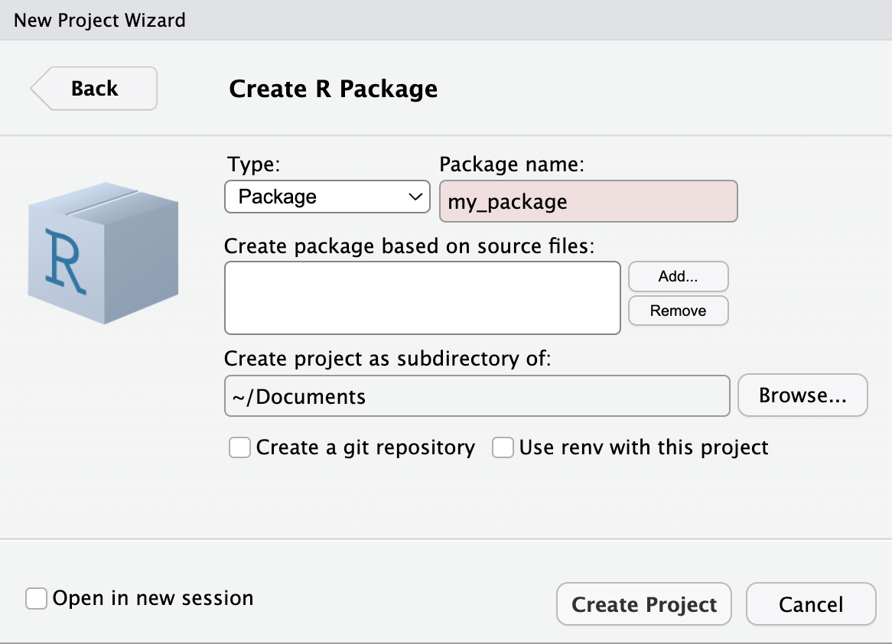

processCounts <- function(antigen_output){
# 1. Store Counts Data
counts_data <- antigen_output$counts
# 2. Data Wrangling
counts_data <- counts_data %>%
dplyr::mutate(Location=gsub(".*,", "", Location)) %>%
dplyr::mutate(Location=substr(Location, 1, nchar(Location)-1)) %>%
tidyr::pivot_longer(-c(Sample, Location, Plate), names_to = "Antigen", values_to = "Count") %>%
dplyr::mutate(Warning = dplyr::case_when(
as.numeric(Count)<15~1,
as.numeric(Count)>=15~0
))
return(counts_data)
}R Package Development
Creating an R Package
First, open a new project in R and select: File > New Project > New Directory > R Package.
Here you will enter your R package name e.g.,{my_package} as shown in the image to the right.
Tip
R-emember: A catchy name sticks! Make it short, smart, and a clever play on “R” can make your package name memorable!

Build your functions
Start up your .R file and enter your function: R/processCounts.R
Then click inside the function and either use the shortcut command (Mac): Shift + Option + Command + R OR you can go into Code > Insert Roxygen Skeleton.
This will load something that looks like this:
#' Process Counts from Raw Serological Data file
#'
#' A helper function to process counts data.
#'
#' @param antigen_output Output from `readAntigens()` (reactive).
#' @return Returns a long table of counts with "Warning" category (<15 == 1 and ≥ 15 == 0) for downstream wrangling.
#' @export
#'
#' @author Dionne ArgyropoulosThere are many other possibilities to add! See more in the documentation.
NAMESPACE file
Once you have built one or multiple .R files, they need to be added to the manual! Here, you run the following line in your console!
# devtools::document() # updates NAMESPACEIt is useful to run this command every time you write or update an .R file. This will create and update .Rd files for the manual. It will also update the NAMESPACE file.
Add dependencies
You will also need to add “imports” for each package in the roxygen file. This includes all of the packages and/or functions that are used. To save memory, it is best practice to load only the functions that you require in each function.
For example, in the processCounts() function, the dplyr::mutate(), dplyr::case_when() and tidyr::pivot_longer() functions are used. We can write them in the roxygen documentation by adding the @importFrom {package} {argument} function, where multiple arguments can be added by just listing them side-by-side (as shown for dplyr below).
#' Process Counts from Raw Serological Data file
#'
#' A helper function to process counts data.
#'
#' @param antigen_output Output from `readAntigens()` (reactive).
#' @return Returns a long table of counts with "Warning" category (<15 == 1 and ≥ 15 == 0) for downstream wrangling.
#' @export
#'
#' @importFrom dplyr mutate case_when
#' @importFrom tidyr pivot_longer
#'
#' @author Dionne Argyropoulos
processCounts <- function(antigen_output){
# 1. Store Counts Data
counts_data <- antigen_output$counts
# 2. Data Wrangling
counts_data <- counts_data %>%
dplyr::mutate(Location=gsub(".*,", "", Location)) %>%
dplyr::mutate(Location=substr(Location, 1, nchar(Location)-1)) %>%
tidyr::pivot_longer(-c(Sample, Location, Plate), names_to = "Antigen", values_to = "Count") %>%
dplyr::mutate(Warning = dplyr::case_when(
as.numeric(Count)<15~1,
as.numeric(Count)>=15~0
))
return(counts_data)
}If you used more functions from a package, for example in the plotCounts() function below where ggplot2:: is called often for many different functions, then we just load the ggplot2 package by @import {package}.
#' Plot Bead Count Data
#'
#' This function gets the count data and plots the plate image, creating a new
#' facet (i.e., panel) for each antigen and each line represents the
#' different plates so that they can be visualised.
#'
#' @param counts_output Output from `getCounts()` (reactive).
#' @param experiment_name User-input experiment name (reactive).
#' @return Tile Plot showing binary result of "sufficient beads" with cut-off
#' >15 beads and "repeat" ≤15 beads (ggplot).
#' @export
#' @import ggplot2
#' @author Shazia Ruybal-Pesántez, Dionne Argyropoulos
plotCounts <- function(counts_output, experiment_name){
bead_counts <- counts_output
bead_counts$Plate <- factor(bead_counts$Plate, levels = unique(bead_counts$Plate[order(as.numeric(str_extract(bead_counts$Plate, "\\d+")))])) # reorder by plate number
bead_counts %>%
ggplot2::ggplot(mapping = aes(x = Col, y = fct_rev(Row), fill = Repeat), fill = summary) +
ggplot2::geom_tile(aes(height = 0.90, width = 0.90)) +
ggplot2::scale_x_continuous(breaks = c(1, 2, 3, 4, 5, 6, 7, 8, 9, 10, 11, 12), position = "top") +
ggplot2::scale_fill_manual(values = c("sufficient beads" = "#91bfdb", "repeat" = "#d73027"), drop=FALSE) +
ggplot2::theme_bw() +
ggplot2::labs(x = "", y = "", title = experiment_name , fill = "") +
ggplot2::facet_wrap( ~ Plate, ncol = 3, scales = "free_y") # This will create separate facets for each level of 'Plate'
}DESCRIPTION file
Lastly, we need to update the default empty DESCRIPTION file which looks like below:
# Package: mypackage
# Title: What the Package Does (One Line, Title Case)
# Version: 0.0.0.9000
# Authors@R:
# person("First", "Last", , "first.last@example.com", role = c("aut", "cre"))
# Description: What the package does (one paragraph).
# License: `use_mit_license()`, `use_gpl3_license()` or friends to pick a
# license
# Encoding: UTF-8
# Roxygen: list(markdown = TRUE)
# RoxygenNote: 7.3.2Which you can update as intended for your purposes. In order to add any package dependencies as discussed above, then to add packages to the dependencies, you must use:
# usethis::use_package("dplyr") # adds to Imports in DESCRIPTIPN
# usethis::use_package("ggplot2", "Suggests") # adds to Suggests in DESCRIPTIONCheck that the package works
THEN you can check that all your functions and packages are loaded properly to build your package:
# devtools::check()It will tell you if your package:
- Uses functions from a package not listed in DESCRIPTION
- Lists packages you don’t actually use
Overall Workflow
- Create .R file
- Add your function to the .R file
- Add roxygen comments in .R file, including
@importor@importFromfor package dependencies - Run
devtools::document()to update NAMESPACE - Use
usethis::use_package("package")to add to DESCRIPTION - Run
devtools::check()to verify consistency
For more detail about the R package development process, see the manual.
Add Licence
To add the Creative Commons Attribution licence (CC BY) in an R package’s DESCRIPTION:
# usethis::use_ccby_license("Your Name")Global Functions
To create a package-level documentation file in R, you create a special .R file (commonly my_package-package.R) that includes a @docType package and a NULL at the end.
This file generates the help page users see when they run ?my_package and is the right place to include global @importFrom directives like for %>%.
First create R/my_package-package.R and add the following roxygen block, for example:
#' pvsero: Tools for serology test-and-treat
#'
#' This package provides tools to process, model, and visualise serological data
#' as part of the PvSeroTaT study.
#'
#' @docType package
#' @name pvsero
#' @importFrom magrittr %>%
#' @importFrom dplyr select filter mutate
#' @importFrom ggplot2 ggplot aes geom_point
NULLReplace the title and description with your own.
@docType packagetells roxygen this is the main package doc@name pvserolinks the doc to the package name@importFrom… adds functions to NAMESPACENULLat the end is required — the doc has no function attached
Then rebuild the documentation: devtools::document() to update the NAMESPACE and creates "man/my_package.Rd", which is the file for ?my_package
If specific packages and/or functions are not added.
You can handle variable column names that are defined in R in a file called R/globals.R
# e.g.:
# utils::globalVariables(c(
# ".", "Sample", "SampleID", "RAU", "MFI", "Plate", "Program",
# "Agg", "Antigen", "Beads", "Count", "Type", "QC_total", "Repeat",
# "Gate", "LL.5", "Well", "Location", "Location.2", "Region",
# "pred_class_max", ".pred_new", "seropositive", "seronegative",
# "stdcurve", "Sampling Errors", "Sens_Spec", "Text", "Total",
# "Warning", "status_code", "type.letter", "dilution", "div", "value",
# "xPONENT", "mfi", "mfi_pred", "new_fit", "eth_fit", "ref_mfi",
# "error", "suffix", "prefix", "drm", "coef", "file_name", "data",
# "tibble", "data_type", "pull", "fct_rev", "glue", "where",
# "fromJSON", "png_fit", "row_number", "everything", "n"
# ))Then re-check and iterate
# devtools::document()
# devtools::check()If you want to upload global R packages that apply to multiple functions:
#' pvsero: Tools for [Your Package Description Here]
#'
#' [Optional longer description of what your package does]
#'
#' @docType package
#' @name pvsero
#' @importFrom magrittr %>%
NULLThis: - Documents the package as a whole (@docType package) - Imports %>% once globally - Keeps your NAMESPACE tidy Then run: devtools::document()
Adding files to the package
Create inst/extdata folder path and add all of the files to add.
Then you can run the files here:
# magpix_file <- system.file("extdata", "example_MAGPIX_plate1.csv", package = "pvsero")
# file <- read.csv(magpix_file)This also works for .rda, .csv, .xlsx or other files.
You can also add a template.Rmd file to create PDFs or HTML outputs from rmarkdown files:
# template <- system.file("rmd", "template.Rmd", package = "pvsero")
### OR FOR EXAMPLE IN THE `pvsero::renderQCReport()`:
# rmarkdown::render(
# input = system.file("rmd/template.Rmd", package="pvsero"),
# output_file = paste0(experiment_name, "_", date, "_", location, "_", version, "_QCreport.pdf"),
# output_dir = here::here(),
# params = list(
# raw_data_filename = raw_data_filename,
# experiment_name = experiment_name,
# date = date,
# experiment_notes = experiment_notes,
# platform = platform,
# stdcurve_plot = stdcurve_plot,
# plateqc_plot = plateqc_plot,
# blanks_plot = blanks_plot,
# check_repeats_output = check_repeats_output,
# check_repats_table_pdf = check_repats_table_pdf(check_repeats_output),
# model_plot = model_plot,
# operator_output = operator_output(),
# volume_output = volume_output(),
# calibration_output = calibration_output(),
# machine_output = machine_output(),
# plate_list_output = plate_list_output()
# )
# )Add documentation to a dataset
To create .Rd documentation files for datasets included in your R package, you document them with roxygen2-style comments above the dataset definition or in a dedicated .R file. These get converted into .Rd files when you run devtools::document().
1. Decide where to store the dataset
You have two options:
| Type | Location | Format | Access |
|---|---|---|---|
| Lazy-loaded | data/ | .rda | data_name |
| File-based | inst/extdata/ | .csv/.txt | system.file() |
Let’s assume you’re using the data/ folder and loading the data with data() or library(my_package).
2. Save the dataset
In your package root:
# usethis::use_data(my_data, overwrite = TRUE)This creates data/my_data.rda.
3. Create documentation in R/ folder
Create a new R script, e.g. R/data-documentation.R, and add:
#' Example Serological Dataset
#'
#' A dataset containing raw RAU values and metadata from a test plate run.
#'
#' @format A data frame with 96 rows and 8 variables:
#' \describe{
#' \item{SampleID}{Unique identifier for the sample}
#' \item{Antigen}{Antigen name}
#' \item{RAU}{Relative antibody units}
#' \item{Plate}{Plate ID}
#' \item{Repeat}{Repeat measurement flag}
#' \item{Status}{Classification of sample}
#' \item{Region}{Geographic region}
#' \item{Program}{Treatment program}
#' }
#'
#' @source Mueller Lab, WEHI
"my_data"The final line “my_data” tells roxygen you’re documenting the object named my_data.
4. Run devtools::document()
# devtools::document()This creates man/my_data.Rd, which users can now view via:
# ?my_data
Tip
Tip: Document each dataset in a separate roxygen block. Also, if you’re using CSV files in inst/extdata/, you don’t need .Rd docs unless you’re loading them as data objects inside the package.
Example for multiple datasets:
#' Plate Metadata
#'
#' Metadata for the test plate used in example analysis.
#'
#' @format A data frame with 96 rows and 5 columns.
#' @source Internal study data
"plate_meta"
#' Serological Measurements
#'
#' Processed MFI and RAU values used in the example vignette.
#'
#' @format A tibble with 96 observations of 3 variables.
#' @source Simulated data
"sero_data"Creating a Vignette
Run the following command once, to:
- Creates a
vignettes/directory (if it doesn’t exist) - Creates an
.Rmdfile at e.g.,vignettes/getting-started.Rmd - Adds knitr and rmarkdown to
Suggests: inDESCRIPTION - Configures
DESCRIPTIONto build vignettes
# usethis::use_vignette("getting-started")This will be added to the DESCRIPTION: VignetteBuilder: knitr
Add content to the vignette
Simply open the .Rmd file and edit as per a normal R Markdown.
# ---
# title: "Getting Started with my_package"
# output: rmarkdown::html_vignette
# vignette: >
# %\VignetteIndexEntry{Getting Started with my_package}
# %\VignetteEngine{knitr::rmarkdown}
# %\VignetteEncoding{UTF-8}
# ---
#
# ```{r setup, include = FALSE}
# knitr::opts_chunk$set(
# collapse = TRUE,
# comment = "#>"
# )
# library(my_package)Upload the vignette
Once you are ready for the vignette to be updated to the manual, run the following command:
# devtools::build_vignettes()
# devtools::document()This will:
- Knit the .Rmd file into .html and .R files
- Place them into inst/doc/ so they’re included when your package is installed
Now you can view the vignette by:
# browseVignettes("my_package") # OR
# vignette("my_package")
Tip
Use devtools::check() to confirm your vignette builds cleanly.
Keep vignettes short, succinct and low data space.
Exporting the Package
Option 1: Local Only: Build a .tar.gz file distributable package file
# Step 1:
# devtools::build() # this creates a `my_package_0.1.0.tar.gz` file
# Step 2:
# install.packages("my_package_0.1.0.tar.gz", repos = NULL, type = "source")The my_package_0.1.0.tar.gz file file be shared to others and they can load the package by: devtools::install("/path/to/my_package")
Option 2: Local or Global: Export to GitHub
To make this work:
- Push your package directory to a GitHub repo
- Ensure the structure is valid (
DESCRIPTION,NAMESPACE,R/, etc.)
This can be done in the R console, as shown below, or in the terminal.
# usethis::use_git() # if your package isn't using Git yet
# usethis::use_github() # this pushes it to GitHubAfter uploading:
# devtools::install_github("yourusername/my_package") # OR
# remotes::install_github("yourusername/my_package")Creating Personal Access Token
if you haven’t created a personal access token for GitHub to interact with your R studio:
# usethis::create_github_token()This will:
- Open GitHub in your browser to the personal access token creation page
- Suggest the correct scopes (you can usually just accept the defaults: repo, user, etc.)
Important
Copy the token when it’s generated — this is your only chance to see it!
Then, in R:
# gitcreds::gitcreds_set()And paste the token when it is prompted. This securely stores your token so Git can authenticate with GitHub from R (using HTTPS).
Then verify you’re signed in:
# gh::gh_whoami()Set your git name and email:
# usethis::use_git_config(user.name = "Your Name", user.email = "your@email.com")Folder Organisation
The overall package folder looks like this:
# my_package/
# ├── DESCRIPTION
# ├── NAMESPACE
# ├── R/
# │ ├── function1.R
# │ └── helper.R
# ├── man/
# │ ├── function1.Rd
# ├── vignettes/ # optional
# ├── tests/ # optional
# ├── inst/ # optional (e.g. extdata, shiny apps)
# ├── data/ # optional
# ├── LICENSE # optional (recommended)
# ├── README.md # optional but niceUpdating the Package
1. Make the Update
- Add new functions, modify existing ones or remove functions sin the R/ folder.
- Add new data to data/ or inst/extdata/ and document it.
- Update vignettes or README files if needed.
- Add or update roxygen2 documentation in .R files.
2. Update Package Documentation
After editing any .R file or adding roxygen tags:
# devtools::document()Updates your NAMESPACE (for @export, @importFrom, etc.). Regenerates .Rd files in man/.
3. Update Version Number (Optional)
In your DESCRIPTION file, the version might be written as Version: 0.1.0. If you’re making a user-visible change, bump the version. Use semantic versioning:
| Type | Example Version Bump |
|---|---|
| Bug fix | 0.1.0 → 0.1.1 |
| New feature | 0.1.1 → 0.2.0 |
| Major redesign | 0.2.1 → 1.0.0 |
Or use:
# usethis::use_version("minor") # or "patch", "major"4. Test Your Package
Run a full check:
# devtools::check()Look for errors, warnings, or notes — especially related to new functions, dependencies, or documentation.
5. Reinstall Locally
If you want to use the updated version in your own R session:
# devtools::install()Or with cleaning to remove old build artifacts:
# devtools::install(clean = TRUE)6. Commit and Push
7. Rebuild Vignettes (Optional)
If your changes affect a vignette:
# devtools::build_vignettes()Bonus: Keep a NEWS file
To track your changes over time, add a NEWS.md file:
# usethis::use_news_md()Then update it with each change, e.g.:
# markdown
# Copy
# Edit
# # pvsero 0.2.0
#
# * Added `plot_plate_mfi()` function for quick QC plots.
# * Updated vignette to include new workflow.
# * Fixed bug in `normalize_rau()`.Troubleshooting FAQs
Warning: Package or Functions not defined
To account for many “notes” from the devtools::check(), you can:
Add @importFrom {package} {function} {function} {function} to those that have not been added. Add @import {package} to those that have not been added.
Warning: Meta/ file corrupted or errors
# Common error: Warning message:
# In loadNamespace(package, lib.loc = libLoc) :
# package ‘my_package’ has no 'package.rds' in Meta/- Restart R
- Clean the build cache:
devtools::clean_dll() - Remove previously installed/broken version:
remove.packages("my_package") - Check where it’s installed:
find.package("my_package"): if it is still installed then delete it manually from the folder - Reinstall the package cleanly:
devtools::install(clean = TRUE):
- This will clean previous build artifacts
- Rebuild the package from source
- Regenerate the Meta/ and pacakge.rd correctly
- Run
devtools::load_all()and the warning should disappear